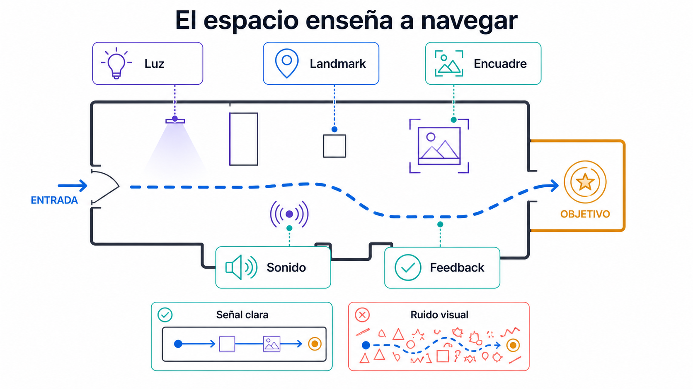
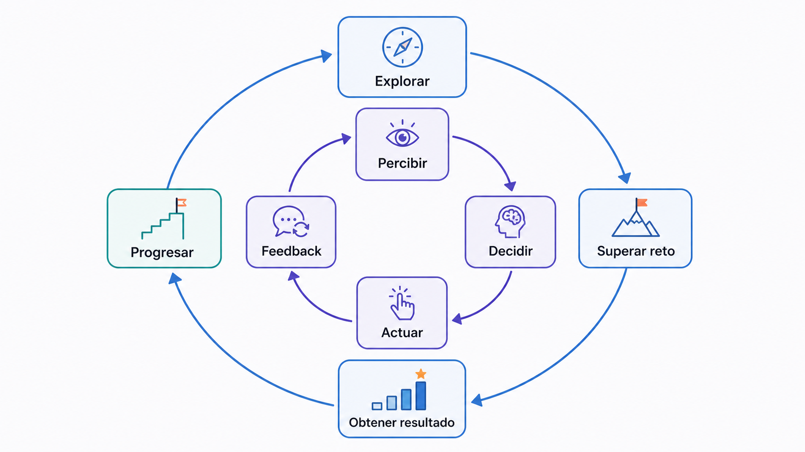
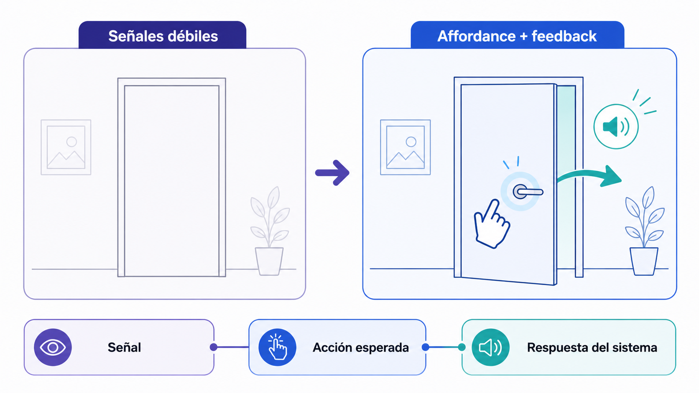

Videojuegos, espacios interactivos y experiencia de usuario
El videojuego como espacio habitable: level design, loops, affordances y UX aplicada a entornos interactivos y XR.
Objetivos de aprendizaje
Comprender el videojuego como espacio interactivo, no solo como narrativa.
Analizar core loop, interaction loop y respuesta.
Reconocer affordances y cómo guían la acción del usuario.
Conceptos clave
Level designSpatial storytellingMecánicas y respuestaCore loopInteraction loopAffordancesUX en juegos y XRAgencia del jugador
Introducción
Esta cuarta clase aborda el videojuego como espacio interactivo habitable. Un videojuego no es únicamente narración con imágenes ni solo un sistema de reglas: es una arquitectura de experiencia donde el jugador se orienta, explora, actúa, recibe respuesta y aprende progresivamente qué puede hacer. La clase introduce level design, spatial storytelling, core loop, interaction loop, affordances, respuesta, UX en videojuegos y XR, y agencia del jugador. En VR/XR el espacio, la escala, la interacción y el cuerpo del usuario adquieren una relevancia todavía mayor: un objeto mal colocado, una affordance ambigua o una interfaz poco legible pueden romper la experiencia.
Conceptos en detalle
Level design
Diseño de espacios jugables. No consiste solo en construir escenarios bonitos, sino en organizar un entorno para que el jugador pueda recorrerlo, leerlo, comprenderlo e intervenir en él. Un buen nivel enseña al jugador sin necesidad de explicar todo verbalmente.
Geometría, escala y ritmo del espacio.
Obstáculos, recompensas y puntos de interés.
Iluminación y sonido como guía.
Caminos principales y secundarios.
Zonas de aprendizaje, tensión o descanso.
Spatial storytelling
Narrativa espacial: contar información mediante el espacio. El propio entorno comunica qué ha ocurrido, quién habita el lugar, qué conflicto existe, qué objetos son importantes, qué zonas son peligrosas y qué recorrido se sugiere, sin necesidad de texto.
Una habitación abandonada con una silla caída y una luz parpadeante.
Restos de una acción anterior visibles en el suelo.
Arquitectura deteriorada o contrastes de escala.
Distribución de muebles y huellas como pistas.
Mecánicas
Acciones que el jugador puede realizar dentro del sistema. En XR, muchas mecánicas no son acciones abstractas: implican gestos corporales.
Saltar, correr, agarrar, lanzar, apuntar.
Abrir, combinar objetos, resolver puzzles.
Explorar, esconderse, construir.
Dialogar, teletransportarse.
Respuesta
Respuesta del sistema a la acción del jugador. Es fundamental para que el usuario entienda que su acción ha sido reconocida. Sin respuesta, la interacción parece rota o incompleta.
Visual: cambio de color, animación, luz, icono.
Sonoro: clic, impacto, tono, voz, ambiente.
Háptico: vibración del mando.
Físico: movimiento, caída, rebote.
Sistémico: apertura de puerta, cambio de estado.
Narrativo: frase, recuerdo, consecuencia.
Core loop
Ciclo principal de actividad que sostiene la experiencia. En un prototipo breve puede ser muy simple.
Explorar → encontrar recursos → mejorar equipo → explorar zonas nuevas.
Explorar → interactuar con objeto → activar respuesta → descubrir nueva zona.
Interaction loop
Ciclo micro de una acción concreta: intención del usuario → input → respuesta del sistema → respuesta → nueva decisión. Diseñarlo bien es esencial para que la experiencia sea clara.
El usuario ve un objeto y acerca la mano.
Lo agarra: el objeto vibra y cambia de color.
El usuario entiende que lo tiene seleccionado.
Affordances
Pistas visuales, físicas, sonoras o espaciales que indican qué puede hacerse con un objeto o entorno. En XR son también corporales: un objeto a la altura de la mano invita a ser cogido.
Una manilla invita a abrir; una palanca a tirar.
Un botón iluminado invita a pulsar.
Un borde amarillo invita a escalar.
Un sonido localizado invita a acercarse.
Un pasillo iluminado sugiere dirección.
UX en juegos y XR
Estudia cómo el usuario comprende, aprende, navega y disfruta la experiencia. En XR, el cuerpo del usuario forma parte de la interfaz.
Claridad de objetivos y curva de aprendizaje.
Legibilidad visual y consistencia de controles.
Respuesta inmediato y accesibilidad.
Señalización espacial y opciones de ayuda.
Modo sentado o de pie; tamaño y distancia de interfaces.
Agencia del jugador
Capacidad del jugador para actuar y percibir que sus acciones tienen consecuencias significativas. No basta con permitir movimiento.
Elegir ruta o resolver de varias formas.
Modificar el entorno.
Decidir el orden de las acciones.
Influir en el estado del sistema.
Construir significado a través de las decisiones.
El videojuego como espacio habitable
El videojuego organiza el espacio para ser recorrido e intervenido. A diferencia de una película, el jugador no solo observa: debe orientarse, tomar decisiones y ejecutar acciones.
Un espacio de videojuego puede funcionar como escenario, mapa, puzzle, sistema de reglas, narración espacial, territorio de exploración, lugar emocional, dispositivo pedagógico o interface jugable.
Diseñar una escena interactiva no significa únicamente colocar objetos: significa organizar un mundo donde el usuario pueda comprender qué ocurre y qué puede hacer.
Level design como pedagogía
Un buen nivel enseña al jugador cómo jugar mediante primeros espacios seguros, obstáculos progresivos, repetición con variación, contrastes de luz y color, zonas de prueba, recompensas visibles, puertas bloqueadas, sonidos de dirección y encuadres espaciales.
El objetivo no es explicar todo con texto, sino diseñar un entorno que comunique. Ejemplo: si una puerta tiene una luz roja y no se abre, el jugador aprende que está bloqueada; al encontrar una llave azul y una puerta azul, comprende la relación sin instrucciones.

Figura 3.15 — Recursos espaciales que enseñan al usuario cómo navegar.
Spatial storytelling: contar con el espacio
El espacio narra de forma indirecta. El jugador reconstruye información observando objetos fuera de lugar, restos de acciones anteriores, iluminación dramática, sonidos lejanos, arquitectura deteriorada, huellas, distribución de muebles, contraste entre zonas, repetición de símbolos o cambios de escala.
En XR esta narrativa es especialmente potente: el usuario puede acercarse físicamente, mirar desde distintos ángulos e inspeccionar objetos.
Core loop: la estructura repetida de la experiencia
Toda experiencia interactiva necesita algún tipo de ciclo. Si no hay ciclo, la experiencia se siente fragmentada o arbitraria. Un core loop no tiene que ser complejo: en un prototipo puede ser explorar → encontrar objeto → colocarlo → activar respuesta.
Este ciclo se relaciona directamente con el Laboratorio 3: el usuario localiza un objeto, lo agarra, lo coloca en un soporte y se activa una proyección o sonido. Un core loop bien diseñado permite entender la lógica general de la experiencia.

Figura 3.1 — Relación entre el bucle de interacción y el core loop.
Interaction loop: la claridad de cada acción
Cada acción debe ser legible. Un interaction loop claro incluye invitación (el usuario entiende que algo puede hacerse), input (realiza la acción), respuesta (el sistema la recibe), respuesta (comunica que ha ocurrido algo) y consecuencia (cambia el estado del mundo).
Ejemplo: objeto brillante → el usuario apunta → el objeto cambia de color → lo agarra → suena un clic → queda en la mano. Si falta una fase, la experiencia resulta confusa.
Affordances: cómo el mundo invita a actuar
Las affordances reducen la necesidad de instrucciones. En videojuegos clásicos pueden ser un color, una forma o un patrón. En XR importa además la posición del objeto respecto al cuerpo.
Affordance visual: un botón iluminado parece pulsable. Affordance física: una manilla sugiere apertura. Affordance sonora: un zumbido localizado invita a acercarse. Affordance espacial: un pasillo iluminado sugiere dirección. Affordance corporal en XR: un objeto a la altura y tamaño adecuados invita a ser cogido.

Figura 3.2 — Affordances y respuesta que hacen legible una acción.
UX en XR: cuando el cuerpo entra en la interfaz
En XR la UX no se reduce a botones y menús: el cuerpo del usuario forma parte de la interfaz. Hay que diseñar altura de objetos, distancia de lectura, escala de UI, alcance de las manos, posición de interactivos, claridad de rayos o punteros, alternativas para usuarios sentados, respuesta para acciones físicas, ritmo de exposición, tiempos de descanso y evitar movimientos incómodos.
Una escena puede ser técnicamente funcional pero mala desde el punto de vista de UX si el usuario no entiende qué hacer o se siente incómodo.
Tipologías
Affordance
En Unity se traduce mediante material, luz, escala, posición, icono y sonido del objeto. La pista es siempre perceptible antes de la acción.
Material emisivo en el objeto interactivo.
Luz puntual destacando un pedestal.
Soporte con la misma forma que la pieza a colocar (Lab 3).
Preguntas de análisis
¿Qué pista visible anticipa la acción?
¿La pista es legible desde la posición de inicio del usuario?
Interaction loop
Se implementa con eventos de XR Grab Interactable, Ray Interactor, Trigger o Button, encadenando hover → select → activate.
Hover cambia el material; Select agarra; Activate dispara una acción.
Lab 3: agarrar el objeto y soltarlo en el soporte.
Preguntas de análisis
¿Cada fase del ciclo tiene una señal perceptible?
¿Qué ocurre si el usuario suelta el objeto fuera del soporte?
Respuesta
Cambios de material, AudioSource, animaciones y vibración háptica responden a las acciones del usuario.
Cambio de color en hover; clic al seleccionar.
Animación de puerta al activar el trigger del Lab 3.
Preguntas de análisis
¿Hay respuesta en al menos dos canales (visual y sonoro)?
¿El respuesta ocurre en el mismo instante que la acción?
Core loop
En Unity es la secuencia principal de la escena: la actividad que se repite y sostiene la experiencia.
Organización de la sala, recorridos y zonas en la escena Unity. Define dónde empieza el usuario y hacia dónde mira.
Punto de spawn orientado hacia el objeto interactivo.
Iluminación que destaca la zona activa.
Zonas vacías que invitan al desplazamiento.
Preguntas de análisis
¿El usuario sabe dónde mirar al iniciar la escena?
¿Hay una jerarquía clara entre zonas?
Spatial storytelling
Objetos, luz, sonido y distribución espacial cuentan la historia sin texto explícito.
Objetos colocados como huellas de una acción.
Audio espacial que sugiere una dirección.
Preguntas de análisis
¿Qué cuenta tu escena solo con su disposición?
¿Qué objeto, sin texto, da contexto al usuario?
UX
Legibilidad, accesibilidad, confort y claridad de la experiencia en VR/XR.
UI a distancia cómoda de lectura.
Altura de objetos accesible sentado y de pie.
Reducción de fatiga con descansos visuales.
Preguntas de análisis
¿Un usuario sin experiencia entiende qué hacer en 10 segundos?
¿La escena es accesible para distintos cuerpos y posturas?
Referentes
Portal
Portal es un ejemplo fundamental de cómo enseñar una mecánica compleja mediante diseño de niveles. El juego introduce progresivamente el uso de portales sin saturar al jugador de instrucciones. Cada sala funciona como un problema espacial que enseña una posibilidad nueva.
Claridad visual y contraste entre superficies utilizables y no utilizables.
Respuesta inmediato.
Relación entre puzzle y espacio.
Curva de dificultad progresiva.
¿Cómo aprende el jugador qué puede hacer?
¿Cómo se indican las superficies importantes?
¿Qué papel tiene el espacio en la mecánica principal?
¿Qué tipo de core loop sostiene el juego?
¿Qué podría adaptarse a una escena XR sencilla?
Dark Souls
Dark Souls construye mundo a través de arquitectura, enemigos, objetos, atajos y dificultad. No explica todo de forma directa: el jugador aprende mediante observación, error, repetición y consecuencias.
¿Qué partes de esta lógica serían problemáticas en XR?
Outer Wilds
Outer Wilds es un ejemplo de diseño basado en curiosidad, exploración y descubrimiento. El progreso no depende principalmente de mejorar estadísticas, sino de comprender el mundo.
¿Cómo se evita que el jugador se pierda completamente?
¿Qué puede aprender un proyecto XR de esta estructura?
Actividades
Ejercicio 1 — Affordances bien y mal resueltas
Actividad central · 23 min · Análisis visual y crítico
Documentar 3 ejemplos de affordances bien resueltos y 3 mal resueltos. Pueden proceder de videojuegos, apps, experiencias XR, instalaciones interactivas o interfaces digitales.
Recoger 6 ejemplos con captura o descripción.
Para cada uno, indicar medio, affordance y qué invita a hacer.
Marcar si funciona bien o mal y justificar.
¿Qué pista recibe el usuario?
¿La pista es visual, sonora, espacial o física?
¿La affordance genera una expectativa correcta?
¿Qué ocurre cuando el usuario actúa?
¿Cómo se podría mejorar?
Ejercicio 2 — Core loop e interaction loop
Actividad central · 23 min · Análisis de sistema
Elegir un videojuego conocido y describir su core loop y el interaction loop de una acción concreta.
Anotar el videojuego elegido.
Listar el core loop en 3–4 pasos.
Elegir una acción concreta y describir intención, input, respuesta, respuesta y consecuencia.
¿Qué actividad se repite más en el juego?
¿Qué hace que esa repetición no sea aburrida?
¿Qué respuesta mantiene al jugador informado?
¿Qué pasa si el interaction loop falla?
¿Cómo adaptarías ese loop a una escena XR?
Actividades de ampliación opcional · fuera de la sesión
Ejercicio 3 — Análisis de navegación
Ampliación opcional · 20 min · Análisis espacial
Elegir un nivel, sala o zona concreta de un videojuego y analizar cómo guía al jugador.
Observar caminos principales y secundarios.
Anotar uso de luz, color y sonido.
Identificar enemigos u obstáculos, recompensas y bloqueos.
Marcar puntos de interés y zonas de descanso.
¿Cómo sabe el jugador hacia dónde ir?
¿Qué elementos llaman la atención?
¿La navegación es libre o dirigida?
¿Qué ocurre si el jugador se equivoca?
¿Qué estrategia podrías usar en una escena Unity?
Ejercicio 4 — UX en XR: diagnóstico de una escena
Ampliación opcional · 20 min · Ejercicio aplicado
Imaginar o revisar una escena XR con tres objetos interactivos y detectar posibles problemas de UX, indicando causa, consecuencia, solución de diseño y solución técnica en Unity.
Escoger un nivel concreto de un videojuego y analizarlo según seis criterios: navegación, interacción, respuesta, narración mediante el entorno, curva de aprendizaje y estrategias de inmersión. Incluir ficha con título, estudio, año, género y perspectiva.
¿Cómo se orienta al jugador sin texto?
¿Qué acciones articulan el nivel?
¿Qué respuesta distingue acciones exitosas de fallidas?
¿Qué cuenta el espacio por sí mismo?
¿Qué puede aprender mi proyecto XR de este nivel?
Conexión con Unity
Diseñar una microsecuencia para implementar en Unity (Laboratorio 3). La secuencia debe encadenar affordance → acción → respuesta → consecuencia.
Nombre de la secuencia.
Affordance: pista que indica que se puede interactuar.
Acción del usuario.
Input en Unity: XR Grab, Ray Interactor, Trigger, Button, Gaze u otro.
Respuesta visual: qué cambia visualmente.
Respuesta sonoro: qué sonido confirma la acción.
Consecuencia en la escena.
Objeto o sistema necesario: GameObjects, scripts, prefabs.
Posible problema de UX y solución.
Llave luminosa
Affordance: La llave brilla suavemente sobre un pedestal.
Acción: El usuario la agarra.
Input en Unity:XR Grab Interactable.
Respuesta visual: Cambia de color al hacer hover y emite luz al ser seleccionada.
Respuesta sonoro: Sonido breve de confirmación.
Consecuencia: Se activa una puerta o una proyección.
Sistema necesario:XR Grab Interactable, AudioSource, script de trigger, luz, puerta.
Problema UX: El usuario podría no saber dónde colocar la llave.
Solución: Añadir un soporte con la misma forma y color.
Reflexión
Glosario de la lección
Level design
Diseño de espacios jugables o interactivos para guiar, desafiar y comunicar al usuario.
Spatial storytelling
Narrativa construida mediante la organización del espacio, objetos, luz, sonido y recorrido.
Core loop
Ciclo principal de actividad que se repite y sostiene la experiencia.
Interaction loop
Ciclo micro de una acción: intención, input, respuesta, respuesta y consecuencia.
Affordance
Pista visual, física, sonora o espacial que sugiere qué se puede hacer.
Respuesta
Respuesta del sistema que confirma o comunica el resultado de una acción.
UX
Experiencia de usuario. Estudia claridad, accesibilidad, comodidad, comprensión y satisfacción.
Agencia del jugador
Capacidad del jugador para actuar y percibir consecuencias significativas.
Interactor
Elemento que inicia una interacción en XR: mano, mando o rayo.
Interactable
Objeto con el que el usuario puede interactuar.
Spatial Audio
Sonido situado en el espacio, percibido en relación con la posición del usuario.
Finalización de la sesión
Confirma cuando hayas completado la actividad central
La visita a la página se registra como progreso de lectura. Esta confirmación registra la sesión como completada.